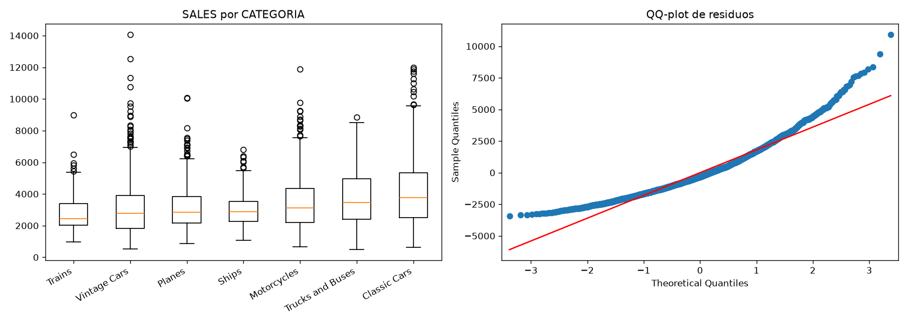

Desarrollo de una solución integral de análisis de datos mediante un proceso ETL con PySpark, modelado semántico con DAX, visualización interactiva con Power BI y análisis estadístico mediante ANOVA.
El objetivo es transformar datos históricos de ventas, clientes y productos en información comprensible para apoyar decisiones comerciales y estratégicas.
Un flujo que recibe datos comerciales históricos, los limpia, los relaciona y genera un modelo analítico.
Posteriormente, Power BI presenta los indicadores empresariales y ANOVA evalúa si existen diferencias estadísticamente significativas entre grupos.
Una empresa multinacional puede acumular grandes cantidades de datos comerciales sin disponer de una visión integrada sobre sus productos, clientes, regiones y resultados. Nuestro proyecto busca transformar esos registros en información útil para la gestión comercial.
Los datos originales contienen información de transacciones, productos y clientes que debe limpiarse, organizarse e integrarse para facilitar su análisis.
Implementamos un ETL en PySpark para preparar los datos, un modelo dimensional en Power BI y medidas DAX para construir indicadores comerciales reutilizables.
El resultado permite investigar mercados, identificar clientes estratégicos, comparar categorías y evaluar diferencias estadísticas entre grupos antes de tomar decisiones.
ETL significa Extract, Transform y Load: extraer, transformar y cargar. En nuestro proyecto incorporamos también controles de calidad y auditoría para verificar los resultados.
A partir del CSV original generamos un archivo JSON de productos y una base SQLite de clientes.
PySpark lee las ventas del CSV y los productos desde JSON. Los clientes se consultan desde SQLite utilizando pandas.
Normalizamos textos, eliminamos duplicados, filtramos líneas canceladas, convertimos fechas y calculamos atributos financieros.
Comprobamos cantidades de filas, fechas nulas, correspondencia de clientes y productos, e indicadores de calidad.
Exportamos el dataset limpio en Parquet y CSV, junto con dimensiones y un reporte de auditoría.
CSV: contiene los registros de ventas originales, con importes, cantidades, fechas, pedidos y referencias de clientes y productos.
JSON: contiene el catálogo de productos, incluyendo código, línea comercial y precio sugerido MSRP.
SQLite: almacena la información descriptiva de clientes, como nombre, ciudad, país y territorio.
Se eliminan registros duplicados según
las claves de negocio, se normalizan
nombres y valores nulos, y se excluyen
las líneas con estado Cancelled.
También se convierten fechas a un tipo válido
y se integran las entidades por
PRODUCTCODE y
CUSTOMERNAME.
Finalmente se crean costo total, utilidad estimada, descuento estimado y columnas temporales.
df_ventas = (
df_ventas
.dropDuplicates(["ORDERNUMBER", "ORDERLINENUMBER"])
.withColumn(
"CUSTOMERNAME",
F.trim(F.col("CUSTOMERNAME"))
)
.filter(~F.col("STATUS").isin(ESTADOS_EXCLUIDOS))
.filter(F.col("SALES").isNotNull() & (F.col("SALES") > 0))
.filter(F.col("QUANTITYORDERED") > 0)
)Este fragmento representa una parte de la limpieza de ventas. La deduplicación conserva una fila por combinación de pedido y número de línea, mientras que los filtros retiran registros que incumplen las reglas comerciales establecidas.
Organizamos la información alrededor de una tabla principal de ventas y varias dimensiones descriptivas. Esto permite analizar las transacciones por productos, clientes y períodos.
Tabla central de hechos. Contiene importes, cantidades, costos estimados, utilidad y referencias a productos y clientes.
Contienen la información descriptiva que permite agrupar las ventas según categoría, cliente, ciudad, país o región.
Permite construir análisis por mes, trimestre y año, así como medidas de variación temporal mediante DAX.
Los resultados permiten identificar categorías comerciales destacadas, concentración geográfica de ingresos y cambios en las ventas durante el período estudiado.
Interpretación: Classic Cars concentra una parte importante de la facturación. Sin embargo, para recomendar inversiones debemos revisar también los costos, los márgenes y la demanda.
Interpretación: Estados Unidos representa aproximadamente el 36,4 % de las ventas conservadas, lo que muestra una concentración comercial relevante en ese mercado.
De 2003 a 2004 las ventas aumentaron aproximadamente un 32 %.
Comparando enero–mayo de 2005 con el mismo período de 2004, el crecimiento fue aproximadamente 41,3 %.
*2005 contiene datos solamente hasta mayo.Utilidad agregada estimada bajo la regla de costo del proyecto.
Classic Cars aporta la mayor utilidad estimada acumulada.
Trains presenta un margen porcentual estimado relativamente elevado, aunque sus ingresos y su utilidad total son menores.
Cada requerimiento responde a una pregunta de negocio utilizando las dimensiones, medidas DAX y visualizaciones construidas en Power BI.
Pregunta: ¿Qué países generan más ingresos y cómo evolucionan sus ventas?
DAX:
Ventas_Totales
Visualización: matriz y gráfico de líneas.
Decisión: investigar mercados estratégicos y planificar recursos por región.
Compara utilidad estimada y margen de las categorías comerciales.
DAX:
Utility,
Margen %.
Decisión: evaluar prioridades comerciales considerando utilidad y demanda.
Identifica los diez clientes que más facturación acumulan.
DAX:
Ventas_Totales.
Decisión: diseñar estrategias de fidelización y gestionar la concentración de ingresos.
Compara ingresos de un período con su equivalente del año anterior.
DAX:
Ventas Año Anterior Comparable
y Variación YoY Comparable %.
Decisión: evaluar crecimiento sin comparar incorrectamente años parciales.
Estudia el cambio porcentual de las ventas frente al mes anterior.
DAX:
Ventas Mes Anterior
y Crecimiento Mensual %.
Decisión: identificar meses de expansión o disminución de ventas.
Compara el ticket por pedido y el promedio de ventas por línea.
DAX:
Ticket Promedio por Pedido
y Promedio Venta por Línea.
Decisión: estudiar diferencias regionales sin confundir ambas métricas.
Identifica productos con mayor cantidad pedida según Small, Medium o Large.
DAX:
Unidades Vendidas.
Nota: DEALSIZE no identifica un canal de distribución real.
Representa los ingresos acumulados según país.
DAX:
Ventas_Totales.
Decisión: reconocer concentración de ingresos y mercados relevantes.
Compara cantidades medias entre rangos de descuento estimado.
DAX:
Rango Descuento,
Cantidad Promedio por Línea.
Decisión: investigar la relación entre precios y cantidad, sin afirmar causalidad.
Clasifica clientes según su contribución acumulada a las ventas.
DAX:
Ventas Acumuladas,
% Acumulado,
Clase ABC.
Decisión: priorizar seguimiento y estrategias de retención según importancia comercial.
DAX es el lenguaje de expresiones que utilizamos para crear medidas de ventas, rentabilidad, promedios, crecimiento temporal y clasificación de clientes.
Ventas_Totales =
SUM(fact_ventas[SALES])
Utility =
SUM(fact_ventas[UTILIDAD])
Margen % =
DIVIDE(
[Utility],
[Ventas_Totales]
)
Pedidos =
DISTINCTCOUNT(fact_ventas[ORDERNUMBER])
Ticket Promedio por Pedido =
DIVIDE(
[Ventas_Totales],
[Pedidos]
)Estas medidas se calculan según los filtros aplicados en Power BI.
EVALUATE
SUMMARIZECOLUMNS(
dim_producto[CATEGORIA],
"Ventas", [Ventas_Totales],
"Utilidad", [Utility],
"Margen", [Margen %]
)
ORDER BY
[Utilidad] DESCEsta consulta devuelve una tabla que resume ventas, utilidad estimada y margen por categoría.
Una medida DAX define un cálculo reutilizable; una consulta DAX permite recuperar resultados tabulares.
En esta sección se presenta el informe desarrollado para responder los diez requerimientos analíticos. Puedes interactuar con las páginas y explorar sus indicadores, gráficos, tablas y mapas.
ANOVA permite evaluar si existen diferencias estadísticamente significativas entre los promedios de varios grupos. Lo utilizamos para complementar los resultados descriptivos de Power BI.
Ventas promedio entre categorías, ventas promedio entre regiones y cantidades medias entre rangos de descuento estimado.
Compara las diferencias entre los promedios de los grupos con la variabilidad existente dentro de ellos.
Un nivel de significancia de 0,05. Un valor p inferior indica evidencia estadística contra la igualdad de las medias.
Selecciona un análisis para observar su diagrama de cajas y su Q-Q plot de residuos, junto con la interpretación estadística y su utilidad empresarial.

El repositorio está organizado para separar el código fuente, las fuentes de datos y los resultados producidos por el procesamiento.
Etl_final_herramientas/
│
├── etl_spark.py
├── anova_ventas.py
├── consultaPower.py
├── Final.pbix
├── index.html
├── sales_data_sample.csv
│
├── fuentes/
│ ├── clientes.db
│ └── productos.json
│
├── salida/
│ ├── ventas_limpio.csv
│ ├── ventas_limpio_parquet/
│ ├── dim_cliente.csv
│ ├── dim_producto.csv
│ ├── auditoria_calidad.csv
│ ├── anova_resultados.csv
│ ├── anova_A1_Ventas_por_categoria.png
│ ├── anova_A1b_Log_ventas_por_categoria.png
│ ├── anova_A2_Ventas_por_region.png
│ ├── anova_A2b_Log_ventas_por_region.png
│ ├── anova_A3_Cantidad_por_rango_de_descuento.png
│ ├── tukey_A1_Ventas_por_categoria.csv
│ └── tukey_A1b_Log_ventas_por_categoria.csv
│
└── venv/python etl_spark.py.
Después,
python anova_ventas.py.
El dashboard se desarrolla y consulta
mediante Power BI.
El proyecto demuestra cómo la integración de datos, la inteligencia de negocios y la estadística pueden utilizarse conjuntamente para analizar problemas comerciales.
Las categorías presentan diferencias estadísticamente detectables en sus importes medios por línea. La empresa podría investigar estrategias específicas de inventario, precios y marketing por categoría.
Los países concentran distintos niveles de ventas totales. Sin embargo, ANOVA no encontró evidencia suficiente de diferencias en los importes medios por línea entre regiones.
Los rangos de descuento estimado no muestran diferencias significativas en la cantidad media pedida. Antes de ampliar promociones, convendría realizar pruebas comerciales y evaluar márgenes reales.
Desarrollamos un proceso ETL reproducible, generamos archivos estructurados para análisis, construimos indicadores mediante DAX y aplicamos pruebas estadísticas para evaluar diferencias entre grupos.
La principal contribución es integrar diferentes técnicas de análisis dentro de un mismo flujo de trabajo, desde los datos originales hasta las conclusiones empresariales.